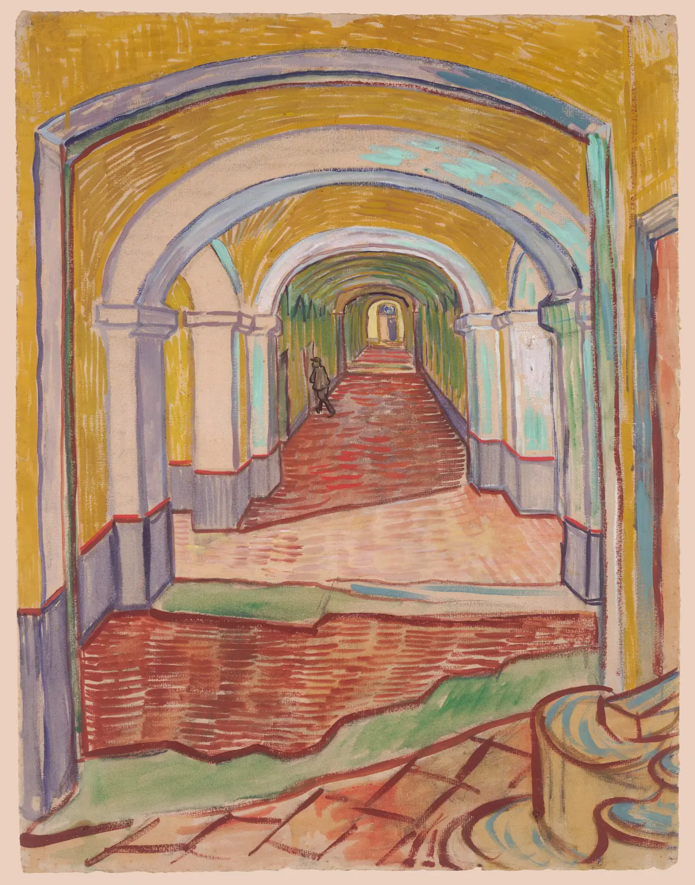
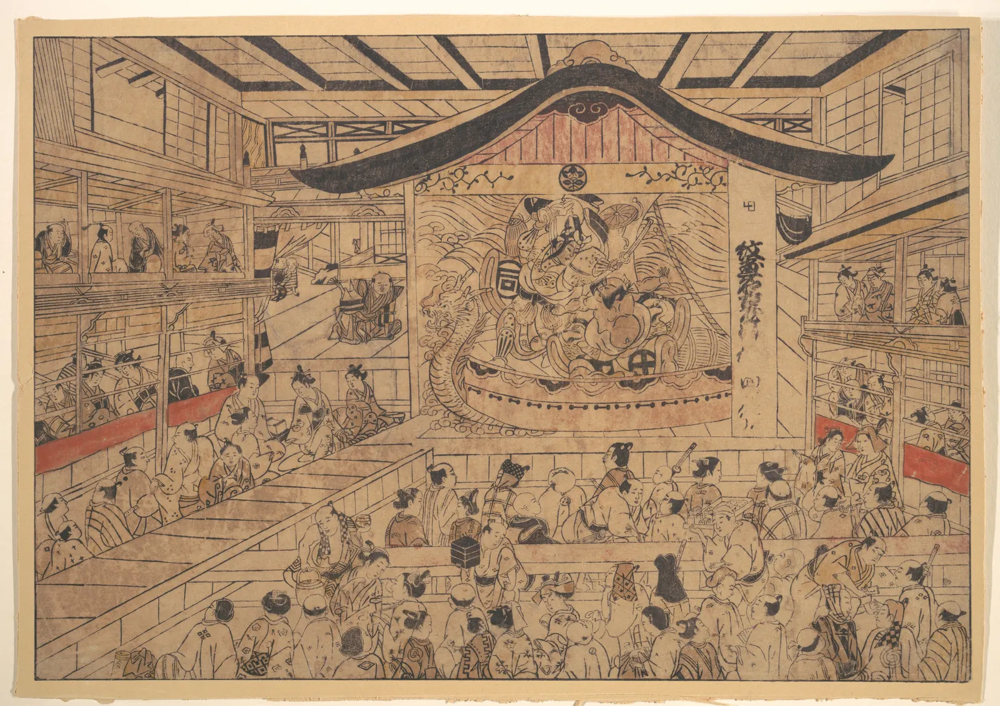

1점 투시
곧게 뻗은 철길 가운데 서서 멀리 보면 두 줄의 레일이 점점 가까워지다가 끝에서 한 점으로 만난다. 레일은 실제로 언제나 같은 간격인데도 그렇다. 긴 복도, 가로수 길, 서점의 서가 통로도 마찬가지다. 이 장은 그 "만나는 점"의 정체를 밝힌다. 그 점은 언제나 눈높이에 있고, 내가 정면으로 바라보는 방향에 있다. 소실점과 눈높이를 직접 끌어 보고, 바닥 타일을 깔고, 대각선 하나로 깊이를 고르게 나누는 법을 익힌 다음, 시야를 너무 넓히면 무엇이 무너지는지 본다. 그리고 뒤러의 판화에서 소실점을 찾고, 소실점 없이도 깊은 공간을 그린 동아시아 회화와 나란히 놓아 본다.
- 눈높이와 수평선이 같은 것이며, 눈높이보다 높은 면은 아랫면이, 낮은 면은 윗면이 보인다는 것을 설명한다.
- 화면에 수직으로 뻗은 평행선이 정면의 소실점 하나로 모이고, 화면과 나란한 선은 평행하게 남는 이유를 핀홀 투영으로 안다.
- 거리점과 대각선으로 바닥 타일을 깔고, 같은 간격의 기둥이나 서가 칸을 깊이 방향으로 나눈다.
- 보는 거리(시야각)가 그림의 왜곡을 정한다는 것을 알고, 60도 원을 점검 도구로 쓴다.
- 명작에서 소실점을 찾고, 1점 투시가 규칙대로 지켜지지 않거나 아예 다른 공간 체계를 쓰는 그림도 함께 읽는다.
철길은 왜 한 점에서 만나는가
르네상스의 건축가 레온 바티스타 알베르티(Leon Battista Alberti)는 1435년의 『회화론』(De pictura)에서 그림을 "열린 창"에 빗댔다. 화가와 장면 사이에 유리창을 하나 세우고, 한쪽 눈을 고정한 채 유리 너머에 보이는 것을 유리 위에 그대로 따라 그리면 그림이 된다는 생각이다. 이 유리창을 화면(Picture plane)이라고 부른다. 장면의 모든 점에서 눈으로 빛이 들어오는데, 그 빛줄기가 화면을 뚫고 지나가는 자리가 그 점이 그림에 찍히는 자리다. 이렇게 한 점(눈)에 모이는 빛줄기로 그림을 만드는 방법이 선 원근법(Linear perspective), 흔히 말하는 투시도법이다.
그림 1에서 바로 두 가지가 보인다. 첫째, 멀리 있을수록 작게 찍힌다. 둘째, 멀어질수록 모든 것이 눈높이 선으로 다가간다. 땅 위의 것은 아래에서 위로, 천장의 것은 위에서 아래로. 철길의 두 레일은 멀어지며 작아지는 간격을 가진 채 눈높이 선 쪽으로 올라가다가, 무한히 먼 곳에서 간격이 0이 되어 한 점에 닿는다. 그 점이 이 장의 주인공이다.
이런 원근의 원리를 처음 실험으로 보인 사람으로는 흔히 15세기 초 피렌체의 건축가 필리포 브루넬레스키(Filippo Brunelleschi)가 꼽힌다. 그는 피렌체 세례당을 투시로 그린 판에 작은 구멍을 뚫고, 그림 뒤에서 구멍으로 거울에 비친 그림과 실제 건물을 번갈아 보게 했다고 전한다. 다만 그 판은 남아 있지 않고, 이야기는 그의 사후에 쓰인 전기에 기대고 있다.
눈높이가 곧 수평선이다
드로잉에서 수평선(Horizon line)은 바다와 하늘이 만나는 선만 뜻하지 않는다. 그림을 그리는 사람의 눈높이(Eye level)를 지나는 수평한 선, 곧 "내 눈과 같은 높이에 있는 모든 것이 놓이는 선"이다. 방 안이라 실제 지평선이 벽에 가려 보이지 않아도 수평선은 있다. 탁 트인 평지에서는 실제 지평선이 바로 이 선 위에 놓인다.
눈높이를 바꾸면 무엇이 달라질까. 아래 왼쪽 옆 그림에서 눈을 위아래로 끌어 본다. 오른쪽은 그 눈으로 본 장면이다. 바닥 위의 상자, 기둥 위의 상자, 천장에 매단 상자가 있다.
눈을 올리고 내리면 수평선이 물체를 자르는 높이가 바뀐다
빨간 표시가 보여 주듯, 수평선은 장면 속 모든 물체를 바닥에서 정확히 눈높이만큼 올라간 자리에서 자른다. 그래서 수평선은 그림 속에서 "그린 사람의 키"를 알려 준다. 수평선이 낮은 그림은 아이나 앉은 사람의 눈으로 본 장면이고, 수평선이 높은 그림은 계단 위나 언덕에서 내려다본 장면이다. 같은 방도 눈높이에 따라 전혀 다른 이야기가 된다.
여기서 하나 구별해 두자. 눈높이는 장면 속에서 눈이 바닥으로부터 얼마나 높은가이고, 수평선이 종이 위 어디에 놓이는가는 화면을 어떻게 자르느냐의 문제다. 서서 본 장면이라도 종이 아래쪽만 잘라 쓰면 수평선이 종이 위쪽 끝에 놓이고, 앉아서 본 장면이라도 위쪽을 넓게 잡으면 수평선이 종이 아래쪽에 놓인다. 둘은 따로 정한다.
소실점: 앞으로 뻗은 선들이 모이는 곳
그림 1을 식으로 쓰면 간단하다. 눈을 원점에 두고 정면을 \(Z\) 방향이라 하면, 장면의 점 \((X, Y, Z)\)는 화면 위 다음 자리에 찍힌다.
이제 정면으로 곧게 뻗은 선, 예를 들어 바닥에 놓인 레일 위의 점들을 생각하자. \(X\)와 \(Y\)는 그대로이고 \(Z\)만 커진다. 그러면 \(x\)와 \(y\)는 모두 0을 향해 줄어든다. 레일이 몇 개든, 바닥에 있든 천장에 있든, 정면으로 뻗은 평행선은 모두 화면의 같은 점 \((0, 0)\)으로 다가간다. 이 점이 소실점(Vanishing point)이다. 반대로 화면과 나란한 선, 곧 \(Z\)가 변하지 않는 가로선과 세로선은 그림에서도 가로선과 세로선으로 남는다. 장면의 상자·방·서가가 화면과 나란히 놓여 있어 정면으로 뻗은 선만 한 점으로 모이는 그림을 1점 투시(One-point perspective)라고 한다. 정면으로 뻗은 선들을 화면에 수직이라는 뜻에서 "직교선"이라고도 부른다.
소실점이 "눈 바로 앞"이라는 사실에서 중요한 결론이 하나 나온다. 그림에서 소실점이 어디에 있느냐는 그린 사람이 장면의 어디에 서 있었느냐와 같다. 아래 방 그림에서 소실점을 끌어 본다. 앞쪽 방의 입구(그림 테두리)는 그대로 두고 소실점만 옮긴다.
소실점을 끌면 내가 선 자리가 바뀐다
소실점을 옮길 때 그림 속 모든 직교선이 함께 따라 움직였다. 1점 투시에서 소실점은 하나뿐이므로, 직교선 하나라도 다른 곳을 향하면 그 물체만 비틀려 보인다. 손으로 투시를 그릴 때 흔한 실수가 바로 이것이다. 상자 하나, 창문 하나를 그릴 때마다 대충 "멀어지는 방향"으로 선을 긋다 보면 직교선들이 조금씩 다른 점을 향한다. 그래서 투시 그림의 첫 단계는 언제나 수평선을 긋고 소실점을 찍는 일이다. 그다음부터 모든 직교선은 자를 대고 그 점을 향해 긋는다.
바닥 타일과 거리점
소실점만으로는 깊이 방향의 간격을 정할 수 없다. 바둑판 같은 바닥 타일을 그린다고 해 보자. 세로줄(직교선)은 소실점을 향해 그으면 되지만, 가로줄은 어떤 간격으로 그어야 할까. 가로줄 사이가 멀어질수록 좁아져야 한다는 것은 알지만, 얼마나 좁아져야 정사각형으로 보일까.
답은 타일의 대각선에 있다. 정사각형 타일의 대각선은 모두 서로 평행하다. 바닥 위에서 정면과 45도를 이루는 평행선이니, 이 선들도 수평선 위의 한 점으로 모인다. 그 점은 소실점에서 정확히 보는 거리 \(f\)만큼 옆에 떨어져 있다. 이 점을 거리점(Distance point)이라고 부른다. 앞줄 타일의 가로줄 하나만 정하면, 거리점을 향한 대각선 하나가 세로줄들과 만나는 자리마다 다음 가로줄이 생긴다. 16세기 초 프랑스의 장 펠르랭(Jean Pèlerin, 필명 비아토르 Viator)의 투시 교본을 거치며 널리 퍼진 방법으로 알려져 있다.
바닥 타일 깔기: 거리점과 흔한 실수
거리점은 보는 거리 그 자체다. 그래서 거리점을 소실점 가까이 찍으면 그림을 코앞에서 보도록 그리는 셈이 되어 원근이 과장되고, 멀리 찍으면 원근이 차분해진다. 실제 손그림에서는 거리점이 종이 밖으로 멀리 나가는 경우가 많다. 그럴 때는 소실점과 거리점 사이의 절반 자리(반 거리점)를 쓰고, 대각선 하나가 타일 두 칸이 아니라 한 칸 깊이의 절반을 지나게 하는 식으로 비율을 맞춘다. 4분의 1 거리점도 같은 원리다.
대각선으로 깊이 나누기
바닥 타일이 아니라 벽을 따라 늘어선 기둥, 창문, 서가 칸, 가로등을 그려야 할 때도 많다. 첫 기둥과 둘째 기둥은 눈으로 정했는데 셋째부터가 문제다. 여기에는 거리점도 필요 없는 깔끔한 방법이 있다. 두 기둥의 가운데 높이를 지나는 직교선(소실점으로 가는 선)을 긋고, 첫 기둥의 윗끝에서 둘째 기둥의 가운데 점을 지나는 대각선을 그어 바닥선과 만나는 자리에 셋째 기둥을 세운다. 둘째와 셋째로 같은 일을 되풀이하면 넷째가 생긴다. 직사각형의 대각선은 그 직사각형의 가운데를 지난다는 사실을 투시 속에서 거꾸로 쓰는 방법이다.
대각선 하나로 같은 간격 이어 가기
같은 방법을 뒤집으면 나누기도 된다. 깊이 방향으로 긴 직사각형(벽면 하나)의 두 대각선을 그으면 교점이 투시 속 정확한 가운데다. 그 교점을 지나는 세로선이 벽을 앞뒤 절반으로 나누고, 반쪽마다 다시 대각선을 그으면 4등분, 8등분이 된다. 문과 창을 벽 가운데에 놓거나, 길게 늘어선 서가를 칸으로 나눌 때 자 하나로 해결된다.
시야각과 왜곡: 60도 원
투시는 수학적으로 완벽해도 그림이 이상해 보일 때가 있다. 그림의 가장자리에 놓인 공이 달걀처럼 늘어나고, 상자는 비스듬히 찢어진 듯 보인다. 원인은 보는 거리다. 투시 그림은 정해진 거리 \(f\)에서 소실점 앞에 눈을 대고 볼 때만 정확하다. 그 거리가 짧을수록, 곧 그림 한 장에 담은 시야각(Field of view)이 넓을수록 가장자리의 물체는 화면에 비스듬히 찍혀 크게 늘어난다. 그런데 우리는 대개 그림을 그보다 멀리서, 정면이 아닌 자리에서 본다. 그래서 늘어난 모양이 그대로 왜곡으로 보인다.
시야각을 넓히면 가장자리가 늘어난다
그래서 투시를 그리는 사람들은 흔히 60도 원(Cone of vision)을 점검 도구로 쓴다. 소실점을 중심으로, 반지름이 보는 거리의 약 0.58배(tan 30°)인 원을 그리고 중요한 물체를 그 안에 둔다. 사람의 눈이 머리를 돌리지 않고 또렷이 보는 범위와 대략 맞는다는 설명이 붙지만, 60도라는 수치는 생리학의 경계가 아니라 오래 쓰여 온 관례다. 45도로 더 보수적으로 잡는 교본도 있고, 일부러 넓은 시야각으로 긴장감을 만드는 그림도 있다.
명작 속 1점 투시
르네상스 이후 화가들에게 1점 투시는 방과 거리, 건물 안쪽을 깊게 여는 강력한 도구였다. 알브레히트 뒤러의 동판화 「서재의 성 히에로니무스」(1514)는 투시 공부에서 자주 분석되는 그림이다. 뒤러는 이탈리아를 여행하며 투시를 배웠고, 훗날 『측정 교본』(Underweysung der Messung, 1525)에 투시 장치를 그려 넣기도 했다. 아래에서 판화 위에 소실점을 직접 찾아본다.
뒤러의 서재에서 소실점 찾기
찾아낸 소실점은 판화의 한가운데가 아니라 오른쪽 가장자리에 있다. 그래서 왼쪽 벽과 창, 천장은 넓게 열리고 오른쪽 벽은 거의 보이지 않는다. 우리는 방의 오른쪽 벽에 바짝 붙어 서서 성인의 서재를 비스듬히 들여다보는 셈이다. 눈높이는 책상에 앉은 성인의 얼굴보다 조금 낮다. 소실점을 가운데 두었다면 대칭의 엄숙한 방이 되었겠지만, 뒤러는 소실점을 옆으로 밀어 창으로 들어오는 빛과 넓은 방의 고요를 보여 주는 쪽을 골랐다. 앞쪽의 사자와 개, 성인의 책상은 정면을 보고 놓여 1점 투시의 질서를 따른다.
1점 투시가 언제나 조용한 질서만 만드는 것은 아니다. 빈센트 반 고흐가 1889년 생레미의 요양원에서 그린 복도는 같은 구조를 전혀 다른 감정으로 쓴다.

소실점이 하나가 아닐 때, 없을 때
1점 투시는 서양 미술에서 수백 년 동안 공간 그리기의 기준이었지만, 공간을 평면에 옮기는 유일한 방법은 아니다. 18세기 일본의 판화가들은 중국을 거쳐 들어온 서양식 투시 판화를 보고, 극장이나 큰 방의 안쪽을 깊게 그린 우키에(浮絵, Uki-e)를 만들었다. 공간이 앞으로 떠오르듯 깊어 보인다는 뜻의 이름이다. 오쿠무라 마사노부는 이 양식을 초기에 이끈 화가 가운데 한 사람이다.

그보다 훨씬 오래전부터 동아시아 회화는 다른 공간 체계를 써 왔다. 궁궐과 누각을 자로 재듯 정밀하게 그린 중국의 계화(界畫)나 긴 두루마리 속 거리 풍경에서는 건물의 깊이 방향 모서리가 한 점으로 모이지 않고 서로 평행하게 비스듬히 뻗는다. 수학의 말로 평행 사선 투영(Oblique parallel projection)에 가깝다. 멀리 있는 건물도 크기가 줄지 않으니, 두루마리를 옆으로 펼쳐 가며 보는 사람의 눈은 어느 한 자리에 묶이지 않고 화면을 따라 걸어간다. 이를 흔히 "이동 시점"이라고 부른다. 산수화가 곽희의 삼원처럼 시점의 유형으로 공간을 짠 것도 같은 맥락이다(CompositionBook 6장, 10장).
서가 통로 세우기
이제 이 장의 도구를 한 장면에 모은다. 서점 안쪽의 서가 통로다. 폭 1.1 m의 통로 양쪽으로 높이 2.1 m의 서가가 5.4 m 이어지고(90 cm 칸 여섯 개), 끝 벽에는 창이 하나 있다. 그리는 사람은 통로 입구에서 2 m 떨어져 선다. 눈높이, 옆으로 비켜 선 거리, 보는 거리를 바꾸고, A4 세로 그림 칸(180 × 250 mm) 위에서 소실점을 끌어 화면을 자른다.
서가 통로: 눈높이와 소실점으로 그림 칸 세우기
시뮬레이터에서 본 것처럼 눈높이는 "무엇이 보이느냐"를 바꾸고, 소실점의 자리는 "어디를 넓게 보여 주느냐"를, 보는 거리는 "얼마나 과장하느냐"를 바꾼다. 세 가지는 서로 다른 결정이다. 그림을 시작하기 전에 수평선 한 줄, 소실점 한 점, 그리고 60도 원 하나를 먼저 그려 두면 나머지 선들이 갈 곳을 잃지 않는다.
서윤의 작업 노트
서가는 머리 위로, 소실점은 왼쪽으로 조금
해칭 규칙을 세운 다음 주, 서윤은 「골목 산책」의 셋째 쪽에 들어갈 서가 안쪽 통로를 그리기 시작했다. 책방 E 1층 안쪽, 폭 1.1 m 남짓한 통로 양쪽으로 높이 2.1 m의 서가가 90 cm 칸 여섯 개씩 이어지고, 끝에는 작은 창과 손님용 나무 의자가 있다. 처음 스케치는 서서 그렸다. 통로 입구에서 2 m쯤 떨어져 섰고, 눈높이는 160 cm였다. 그런데 앞쪽 서가가 종이 양옆으로 쏟아질 듯 기울어 있었고, 바닥이 그림의 절반 가까이를 차지해 정작 책은 작았다.
도경은 스케치 위에 자를 대고 직교선 몇 줄을 연장해 보였다. 선들이 서로 다른 세 곳에서 만났다. 서윤은 선반마다 "멀어지는 쪽"으로 대충 선을 그었던 것이다. 게다가 소실점을 종이 안에 맞추려고 아주 가깝게 잡아서, 이 장의 모델로 재 보면 그림 칸 구석의 시야각이 40도를 넘었다. 도경은 "소실점부터 찍고, 모든 선은 그 점을 향해 그어"라고 말한 뒤 한마디를 덧붙였다. "그리고 어디서 볼지는 이 통로에서 무슨 일이 일어나는지 보고 정해."
주인이 답을 주었다. 이 통로는 손님들이 끝의 의자에 앉거나 서가 아래 칸 앞에 쪼그려 앉아 책을 펼치는 곳이라는 것이다. 서윤은 의자에 앉아 다시 보았다. 눈높이 110 cm에서는 선반 여섯 판 가운데 0.1·0.5·0.9 m의 세 판은 윗면이, 1.3·1.7 m 판과 맨 위 2.1 m 판은 아랫면이 보였다. 서가가 머리 위로 솟아 책에 둘러싸인 느낌이 들었다. 1.3 m 판은 눈높이 바로 위라 거의 한 줄로 보였는데, 서윤은 그것을 오히려 수평선을 알려 주는 표시로 쓰기로 했다.
그림 칸은 A4 세로 종이 안쪽 180 × 250 mm. 서윤은 통로 한가운데 앉은 자리에서 보되, 소실점을 그림 칸 왼쪽에서 81 mm(폭의 45%), 아래에서 100 mm(높이의 40%)에 찍었다. 소실점을 왼쪽으로 조금 밀자 오른쪽 서가의 면이 넓게 열렸다. 그쪽이 주인이 아끼는 동네 작가 책들이 꽂힌 칸이다. 보는 거리는 320 mm로 잡았다. 그러면 소실점에서 가장 먼 오른쪽 위 구석까지 179.7 mm, 시야각으로 29.3°라서 그림 칸 전체가 60도 원 안에 들어간다. 대신 거리점이 소실점 오른쪽 320 mm, 종이 밖으로 멀리 나가므로 서가 칸의 깊이는 대각선 방법으로 나누고, 바닥 줄의 확인에는 소실점 오른쪽 80 mm의 4분의 1 거리점을 쓰기로 했다. 이 장의 모델로 계산하면 바닥은 통로 입구에서 1.5 m쯤 들어간 곳(눈에서 3.5 m)부터 그림 칸 아래 끝에 걸리고, 그 앞의 바닥은 잘려 나간다.
서서 본 그림도 버리지 않았다. 눈높이 160 cm에 수평선을 그림 칸 가운데(아래에서 125 mm)에 둔 안은 바닥과 의자가 잘 보여 "들어가 보고 싶은 통로"로는 나았다. 서윤은 두 안을 나란히 두고 토요일 모임 사람들에게 물었는데, 다섯 명 가운데 넷이 앉은 눈높이의 그림을 골랐다. 서윤은 그 결과를 결정의 근거라기보다 참고로 적어 두었다. 도경은 앉은 그림 속 창가 의자 높이에 수평선이 걸린 것을 보더니 "이 그림은 앉아 있는 사람의 그림이구나" 하고 웃었다.
핵심 정리
- 투시 그림은 장면의 점에서 눈으로 가는 빛줄기가 화면(유리창)을 지나는 자리를 모은 것이다. 화면 위 크기는 거리에 반비례한다(x = fX/Z, y = fY/Z).
- 수평선은 그린 사람의 눈높이다. 수평선은 장면 속 모든 물체를 바닥에서 눈높이만큼 올라간 자리에서 자르고, 눈높이보다 높은 면은 아랫면이, 낮은 면은 윗면이 보인다. 눈높이와 수평선의 종이 위 자리는 따로 정한다.
- 1점 투시에서 정면으로 뻗은 평행선(직교선)은 모두 눈 바로 앞, 수평선 위의 소실점 하나로 모이고, 화면과 나란한 가로선·세로선은 평행하게 남는다. 소실점의 자리는 그린 사람이 선 자리다.
- 정사각형 타일의 대각선은 소실점에서 보는 거리만큼 떨어진 거리점으로 모인다. 거리점이 가까울수록 깊이가 과장된다. 종이 밖이면 반·4분의 1 거리점을 쓴다.
- 같은 간격의 기둥·칸은 가운데 높이의 직교선과 대각선으로 이어 가거나, 직사각형의 대각선 교점으로 나눈다. 화면에서 같은 간격으로 세우면 틀린다.
- 시야각이 넓을수록(보는 거리가 짧을수록) 가장자리가 늘어난다. 60도 원은 생리학의 경계가 아니라 관례적인 점검 도구다.
- 명작은 1점 투시를 도구로 쓰되 소실점의 자리와 정확함을 표현에 맞게 고른다. 동아시아 회화의 평행 사선 투영과 이동 시점은 다른 경험을 담는 또 하나의 공간 체계다.
확인 퀴즈
1. 눈높이 1.6 m에서 정면을 보고 방을 그린다. 높이 1.2~1.9 m의 선반 위에 놓인 상자는 그림에서 어떻게 보이는가?
2. 1점 투시로 그린 복도 그림에서 소실점이 그림의 왼쪽 가장자리 가까이에 있다. 이것이 알려 주는 것은?
3. 바닥 타일을 1점 투시로 그리는데 정사각형 타일이 앞뒤로 길쭉하게 늘어나 보인다. 가장 알맞은 고침은?
4. 동아시아의 계화나 긴 두루마리에서 건물의 깊이 방향 모서리가 한 점으로 모이지 않고 평행하게 그려지는 것에 대한 설명으로 가장 알맞은 것은?